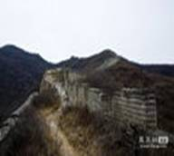

城市精神

在长期革命和建设中，铸成了开滦矿工“特别能战斗”精神、西铺“穷棒子”精神、沙石峪“当代愚公精神”、还有在抗震救灾中凝成的伟大的抗震精神，还有科学发展的“曹妃甸精神”“亮甲店精神”，这些都是伟大的唐山人民宝贵的精神财富。
抗震精神 ：公而忘私、患难与共、百折不挠、勇往直前
新唐山人文精神 ：感恩、博爱、开放、超越
文化底蕴
唐山文化底蕴丰厚，人杰地灵。“不食周粟”、“老马识途”、戚继光“改斗”等典故都发生在这里。唐山是中国评剧的发源地，评剧、皮影、乐亭大鼓被誉为“冀东三枝花”，在国内外有着广泛的影响。
清东陵是我国现存规模最大、建筑体系最完整的皇家陵寝，被列为世界文化遗产；还有长城关隘、景忠山、菩提岛、金银滩、李大钊纪念馆及其故居等众多人文自然景观，现在都已成为旅游的好去处。唐山饮食属京东菜系，蜂蜜麻糖、棋子烧饼、万里香扒鸡等特色小吃享有盛名。这里人才辈出。享誉世界的文学巨匠、《红楼梦》的作者曹雪芹祖籍是唐山丰润人；中国评剧主要创始人成兆才出生在唐山的滦南县；中国共产主义运动先驱、中国共产党主要创始人之一李大钊的家乡在唐山乐亭县。唐山人民勤劳智慧，坚韧不拔，富于创造精神。
（一）唐山评剧
评剧的前身是莲花落，原名“平腔梆子戏”，俗称“唐山落子”，“蹦蹦戏”，关外有“奉天落子”的称谓。莲花落这种民间说唱艺术历史悠久，流域甚广，大江南北，长城内外都有。
唐山评剧产生于河北东部的滦县农村，1910年左右，形成于河北唐山一带。1935年白玉霜在上海演出时，正式使用评剧名称。 莲花落是穷人行乞时的演唱艺术。或说唱吉祥如意的话，或演唱故事。解放前，滦南县境内的居民生活比较贫困，本县地近京城，受京都影响，县境乃“文学之邦，士大夫揖让进退，皆彬彬有礼，重然诺，尚气节，文字朴茂……”（《滦县志·序》），风气开化，民间文学发达。皮影、大鼓书、秧歌等传统艺术形式丰富多彩，民歌、民谣、民谚、民间故事也繁茂优美。勤劳勇敢的滦南人，依岁时风俗，各村多有唱影、说书、扭秧歌、演大戏的。丰富多彩的文艺活动，使人们赏心悦目，养成了对艺术的爱好。莲花落作为乞食的艺术，紧迫时尚，从民歌、民谣、民间故事、秧歌、皮影、大鼓等艺术形式中吸收了许多营养，经过单口对口莲花落、拆出莲花落、唐山落子等阶段，逐步发展成评剧，成为我国文艺百花园中的一朵奇葩，深受广大群众的喜欢。
（二）唐山皮影
唐山皮影，又名冀东皮影，起源于明朝万历年间（1573—1620），是我国历史悠久、源远流长的民间艺术。据史料记载，它发源于河北冀东地区的滦州，由当地艺人黄素志发明，盛行于乐亭，故有“滦州影”、“乐亭影”之称。因其影人、道具是用驴皮镂刻并着色而制成，故又通称“驴皮影”、“皮影”。清朝至民国年间的皮影戏与现在的皮影戏一脉相承，是当地群众喜闻乐见的一种艺术表演形式。1966年，乐亭县被文化部命名为“中国民间艺术之乡——皮影之乡”。
唐山皮影是一种傀儡艺术，它的演出方法是台前立设影幕（俗称“影窗”），操纵演员在“窗”后操纵影人做各种形象逼真的表演，同时有配音演员的演唱以及灯光、布景、音乐、唱腔等艺术形式的烘托，活灵活现地刻划人物，曲折生动地演绎故事，表达剧中人物的情感。
唐山皮影以唱功见长，有男女两种声腔，男腔高亢粗犷，女腔清脆婉转。其曲调、板式风格独特，念白和唱腔极富地方韵味；其影人雕镂精细、造型优美、独具风采；其角色齐全，分为“生”、“小”（旦）、“净”、“大”（花脸）、“髯”（老生）、“丑”、“妖”等行当，各行当有其独特的造型唱腔和表演形式；其唱词格律多为“三赶七”、“七字句”、“五字赋”、“大金边”、“小金边”等，主奏乐器为四胡，其他伴奏乐器以拉、弹、吹民间乐器为主。
皮影戏的剧本俗称“影卷”，有连演数十个晚上的连台本戏，也有演一个晚上的“单出”戏，还有演十几分种、几十分钟的童话剧和寓言剧。唐山皮影剧目多达500余出，代表剧目有《五锋会》、《杨家将》、《二度梅》、《白蛇传》等。历代皮影艺术家有李秀、高容杰、张茂兰、齐永衡等。
（三）乐亭大鼓
乐亭大鼓是我国北方的主要曲种之一，发源于乐亭县，靡声于京、津、冀东及东北三省广大地区。乐亭大鼓是历史文化的时代产物，是说唱艺术发展的必然结果。乐亭大鼓的产生，是在继承古代多种说唱艺术的基础上，经过长期演唱实践逐步发展和成熟起来的。据记载，乐亭大鼓的成熟应在明代中晚期，是吸取乐亭民颜、民谣的精华的基础上发展和成熟起来的。相传乐亭一带的人都有能歌善舞的习俗，逢年过节，都举办群众性歌舞活动和说唱活动。同时乐亭方言本身就有自然的旋律性，字声都带唱音，尾音细长回旋。因此，外地听了乐亭口音，都觉得象唱歌。如果稍微把语音拉长，再加上鼓板，进行提练升华，即能成为具有乡土气息的优美曲调。乐亭大鼓即是在此基础上逐步发展起来的。 乐亭大鼓乐亭大鼓这一名牌，有其偶然的来历。清朝建立以后，开始为旗人分封土地。被分封在乐亭的崔佑文的前辈们在乐亭县扎下了根，被称为"京东第一皇庄"。崔佑文的把兄弟中状元之后，使崔家更加财粗势大，可直通五府六部，结交于皇亲国戚。崔家酷爱民间艺术，他不但组建皮影班社、梆子班社、莲花落班社，还有很多大鼓艺人在崔家演唱。崔家也常年供养这些人。一次，崔佑文进京贡奉，带着大鼓艺人到恭亲王府献艺，艺人们的技艺深得王爷的欢欣，并确定了"乐亭大鼓"之名。这个名称一直延用至今。这就是乐亭大鼓名称的来历。
文物古迹
唐山历史源远流长。早在四万年前我们的先辈就在这块富饶的土地上繁衍生息，耕耘劳作，在漫长的岁月中，以自己勤劳的双手和卓越 智慧，创造了绚丽多彩的文化，遗留下丰厚的文物资源和众多的名胜古迹。据考古调查，目前全市共有古遗址、古墓葬、古建筑、重要石刻、革命纪念建筑、纪念地等历史和近现代文物点一千余处。其中确定为国家重点文物保护单位2处，省级文物保护单位21处，市级文物保护单位25个处，县（市）级文物保护单位近百处。全市共收藏传世文物和出土文物标本四万多件，其中被专家认定为国家三级以上文物数千件，有相当数量属于珍品。
唐山地下文物古迹丰富，各时代文化遗存很多。迁安爪村旧石器时代遗址发掘出土的石器和与之伴生的动物化石，是我市滦河一带四万年前就有人类活动的证明；玉田孟家泉遗址出土的距今2万年前的晚期"智人"下颌骨化石，是我市迄今发现最早的古人类遗骸；迁西西寨新石器时代遗址揭露出的用陶罐排列而成的多组祭祀遗迹，体现了五、六千年以前先民们卓越的艺术成就和浓郁的宗教意识；丰润东欢坨战国遗址发掘的30座半地穴房屋，是我市目前发现规模最大的村落遗址。还有大城山、迁安安新庄、万军，滦县新农村、郎石台，迁西大岭寨砖窑群，乐亭黄坨等不同历史时期的文化遗存，对研究冀东原始文化的形成、发展及其地域性文化属性都提供了翔实的实物资料。
唐山地上名胜古迹多为明、清时期的建筑。经过大地震的劫难，保留下来的珍贵遗址或气势恢宏，或结构精巧，工艺高超。这里有腾峰越谷、蜿蜒曲折，横贯迁安、迁西、遵化三县（市）、长达200.4公里的明代长城；有"京东第一庙"之誉的玉田净觉寺；有名传遐迩的迁西景忠山碧霞元君庙，大自然不仅赋予了它壮丽的景观，而且明清两朝几位帝王对它也多有青睐，既有顺治帝的敕书，又有康熙的题咏；规模宏大、体系完整的帝王陵墓群清东陵，总占地面积2520平方公里。从1663年清王朝第一帝顺治到1935年葬入荣惠皇太后，共建有清代五个皇帝、四个皇后以及嫔妃、公主等陵寝15座。1961年，清东陵被国务院定为第一批全国重点文物保护单位。1999年由国家文物局申报世界文化遗产，同年12月接受联合国遗产委员会组织的验收。此外，丰润天宫寺塔、定慧寺、无梁阁、药师灵塔、遵化汤泉流杯亭、永旺塔等建筑，都风格别致，结构精巧，各具时代特征。 古往今来，深厚的历史文化底蕴，使唐山人文荟萃，灿若群星。他们徜徉于冀东大地，在政治、经济、文化等各个领域为后人留下了宝贵的物质、精神财富。在争取民族解放的斗争中，涌现出了李大钊、邓培、江浩等一大批志士仁人；这里曾举行过震惊全国的开滦五矿工人大罢工，这里曾发生过冀东工农武装抗日大暴动，这里也曾记录下日本侵略者对潘家峪，潘家戴人惨绝人环的屠杀……。历史给我们留下了许多可供瞻仰的纪念遗址、旧居。目前李大钊故居、李大钊纪念馆、潘家峪庄纪念馆、江浩故居、魏春波纪念馆、冀东烈士陵园纪念馆已被确定为各级爱国主义教育基地，唐山博物馆、迁安博物馆、抗震纪念馆也相继对外开放并成为爱国主义教育基地。
（一）明代长城

唐山境内的长城均属明代修筑，更确切一些，是隆庆、万历年间在旧城基础上进行修补增筑的，在唐山境内的明代长城位于北纬40度10秒至40度30秒之间,东起迁安与卢龙交界处的徐流口，西至遵化与天津蓟县交界处的钻天缝，长达208.4公里(人工丈量尺寸)。 国家文物局和国家测绘局经过近两年的科学调查和测绘取得准确数据，唐山境内明长城总长度约为220公里。遵化鹫峰山长城、迁西潘家口水下长城、迁安大理石长城、青山关、喜峰口、冷口关、监狱楼、七十二券楼、水门、长城砖窑、养马圈、神威楼、文字砖长城等皆为长城独秀；以险要著称的冷口、喜峰口、董家口、青山口、洪山口、马兰关等关口要隘都位于这段长城之上。唐山境内的明代长城是闻名于世的我国万里长城的一部分。但是长期以来由于自然和人为因素的破坏，城墙坍毁十分严重，目前只有四道沟、白羊峪、红峪口、大岭寨、青山口等少部分地段保存较好。全境约554座敌台中，保存较为完整的约有140座，原有烽火台100余座,现存遗迹不足10个。长城沿线还有民族英雄戚继光统领军务、戍边御敌长达16年的指挥部——蓟镇总兵府，近年来在国内外的影响越来越大。
（二）玉田净觉寺
净觉寺是全国重点文物保护单位，国家AAA级景区，位于玉田县杨家套乡蛮子营村东，占地面积18540平方米，地理位置十分优越，位于京、津、唐地区的腹地，西距北京市110公里，东南距唐山市35公里，西南距天津市140公里，南距京沈高速公路鸦鸿桥出口10公里，这里远离城镇的喧嚣,富有城里人难得一见的田野风光。往北望去,燕山余脉的大小山头依稀可辨,门前则有还乡河水缓缓流过。无论是桃红柳绿的阳春三月，还是冰天雪地的数九寒冬，这里有说不尽写不完的诗情画意。净觉寺始建于唐代，历经宋、金、辽、元、明、清修建，千余年来岁月沧桑，展现在今人面前的仍保留了它的宽敞、豁达、庄严和肃穆的风貌。有人说：“净觉寺是一首诗，它用凝重而含蓄的语言，陈述着既古朴又玄妙的哲理，诉说着既美妙又虚幻的企盼，净觉寺是一本书，它的魅力不仅在于那华丽典雅的装帧，更重要的是它那丰富多彩、博大精深的内涵。”
净觉寺享有“京东第一寺”的美誉。古建专家评价，规模可观，工艺高超，风格奇特。净觉寺是座佛寺，但又不同于其它佛寺，那精美的建筑结构，浓艳的彩绘雕刻，使人过目不忘，具有很高的历史价值、艺术价值和科学价值。主体建筑有三殿：门殿、正殿（香阜宫）、后殿（大雄宝殿）；三楼：碑楼、钟楼、鼓楼。此外还有东西配殿、龙凤门楼、东西配房、智然墓碑亭等等。最夺人眼目的是门殿——“无梁殿”，可以说是古刹的第一奇观。门殿建筑面积120平方米，高12米，皆为砖石拱券灌以澄浆而成，它不仅无梁，而且无檩无柱。其内壁外壁都是磨砖对缝，缝细而匀，就像一条条用力抻直的白线，它的椽、飞、昂、拱均用青砖精工雕琢，昂嘴间还刻有九十六尊神态各异的佛像，全殿除去门窗，没有任何木制品，从建筑学上堪称一绝。另一奇观是正殿（香阜宫），殿高20米，建筑面积200平方米。双檐歇山顶彻上露明造。此殿为木结构，无一钉一铆，其中的“悬梁吊柱”似悬非悬，似吊非吊，是巧用力学的原理建筑而成的。特别是天窗下面，制有36个木格，每个木格都有彩绘的风景和泥塑的人物，摆成《西游记》等神话传说或历史故事。抱厦由8根石柱支撑，前檐上不伸出12个斗拱，斗拱的端头雕琢成12生肖的模样。雀替上镶嵌着红木精雕而成的佛门八宝：轮、罗、伞、盖、花、罐、鱼、长。后殿规模与正殿大致相同，其建筑结构别样新颖。上面为歇山顶，下面为硬山顶，具有明显的明代建筑风格，在古建中也是罕见，进入殿内可以看到，梁柱有悬有落，或吊或沉，错落有致，明暗相宜。殿前有廊，廊上竖立着四根粗大的石柱，中间两根雕刻着形态逼真的盘龙，是净觉寺建筑的又一奇观。净觉寺的“三楼”也是风姿绰约，各具特色，特别是矗立在门殿后的碑楼，造型典雅，工艺高超，富有艺术魅力。碑楼为典型的杆栏式建筑，绿色琉璃瓦顶，6层斗拱端头雕刻栩栩如生的佛像，碑楼分上下两层，上层是阁，原为藏经阁；下层竖有四通大碑、两通小碑，这些石碑不仅为研究净觉寺的历史提供了宝贵的资料，而且具有珍贵的艺术价值，常使游客流连忘返，赞不绝口。尤为特殊的是清代著名书法家王敬德的《续修净觉寺碑记》鹤立在此，他的大草体龙飞凤舞，舒卷飘逸，博得了今人的喝彩。碑文中共有十四个“之”字，每个“之”字的写法各异，然而各有韵味，实属书法艺术之佳品。钟鼓楼分别位于东西配殿的南端，东为钟，西为鼓。两楼均为十字脊，四面歇山，歇山上嵌有四龙戏珠的砖雕。有藏传佛教建筑特点。钟楼原悬挂的铁钟是道光八年（1828年）铸造，现在悬挂的是2009年初铸造的铜钟，钟声更加宏亮悠扬。鼓楼上的大鼓为1993年制作。在配殿与正殿连接处，东西两方各有一座小巧玲珑的门楼，东为龙，西为凤。那龙就要腾空而起，那凤仿佛也要飞舞而去。更为奇妙的是，这两座门楼从北看见木不见石，从南看见石不见木，真叫人叹为观止。
净觉寺不仅以规模宏伟、结构新奇吸引着成千上万的游客，它那各式各样的雕刻也使人眼花缭乱，应接不暇。从材料上看，有石雕，木雕，砖雕；从事样上看，有浮雕，透雕，整雕。从内容上看，既有宫廷色彩的飞龙舞凤，又有民间情调的“招财进宝”；既有庄重威严的佛门偶像，又有妙趣横生的“猴捅马蜂窝”。檩柱的外表，殿堂的四壁，门窗的裙板，斗拱的端头，都有彩绘的精雕，无一遗漏。
（三）清东陵
清东陵坐落在河北省唐山市的遵化市境，西距北京市区125公里，据说是顺治到此打猎时选定的，康熙2年（1663年）开始修建。陵区南北长125公里、宽20公里，四面环山，正南烟炖、天台两山对峙，形成宽仅50公尺的谷口，俗称龙门口。清代在此陆续建成217座宫殿牌楼，组成大小15座陵园，诸陵园以顺治的孝陵为中心，排列于昌瑞山南麓，均由宫墙、隆恩殿、配殿、方城明楼及宝顶等建筑构成。其中方城明楼为各陵园最高的建筑物，内立石碑，碑上以汉、满、蒙三种文字刻写墓主的谥号；明楼之后为"宝顶"（大坟头），其下方是停放灵柩的"地宫"。由陵区最南端的石牌坊向北到孝陵宝顶，由一条约12公尺宽、6公里长的神道连成一气，沿途大红门、大碑楼（圣德神功碑楼）、石像生、龙凤门、七孔桥、小碑楼（神道碑楼）、隆恩门、隆恩殿、方城明楼等建筑井然有序，主次分明。
清东陵是一块难得的"风水"宝地。北有昌瑞山做后靠如锦屏翠帐，南有金星山做朝如持芴朝揖，中间有影壁山做书案可凭可依，东有鹰飞倒仰山如青龙盘卧，西有黄花山似白虎雄踞，东西两条大河环绕夹流似两条玉带。群山环抱的堂局辽阔坦荡，雍容不迫，真可谓地臻全美，景物天成。当年顺治到这一带行围打猎，被这一片灵山秀水所震撼，当即传旨"此山王气葱郁可为朕寿宫"。从此昌瑞山便有了规模浩大、气势恢宏的清东陵。
清东陵的建筑恢宏、壮观、精美。有580多单体建筑组成的庞大古建筑群中，有中国现存面阔最宽的石牌坊，五间六柱十一楼的仿木结构巧夺天工，中国保存最完整的长6000多米的孝陵主神路，随山势起伏极富艺术感染力，乾隆裕陵地宫精美的佛教石雕令人叹为观止，班禅大师赞誉为"不可多得的石雕艺术宝库"，慈禧陵三座贴金大殿，其豪华装修举世罕见，"凤上龙下"石雕匠心独运…… 整座东陵在木构和石构两方面都有精湛的技巧，可谓集清代宫殿建筑之大成，其中孝陵的石像生最多，共达18对，造型多朴 实浑厚；乾隆的裕陵规模最大、最为堂皇，而慈禧的普陀峪定东陵则是首屈一指的精巧建筑。目前，清东陵15座陵园中，只开放了裕陵和东、西太后陵及香妃墓等四处供游客参观。 清东陵入口处的文物保护碑清东陵以她无可辩驳的魅力，以她重要的历史、艺术和科学价值于2000年11月30日被正式列入世界文化遗产名录。2001年1月被国家旅游局评定为国级AAAA级旅游景区。
联合国世界遗产专家说清东陵是“人类具有创造性的天才杰作”，陵区以昌瑞山主峰下的孝陵为中轴线，依山势呈扇形东西排列，主次分明，尊卑有序。各陵按规制营建了一系列建筑，总体布局为"前朝后寝"。“百尺为形，千尺为势”的审美思想贯穿于每一座陵寝建筑中，使各单体建筑在空间组合上达到了近乎完美的空间组合。远望时，殿宇、城垣、门坊、道路、桥涵，金黄碧绿、丹红雪白，气势恢宏壮丽而深沉。由远及近，步移景易，变化丰富，秩序严谨，相得相济，引人入胜，是中国古代陵寝建筑的典范之作，其建筑艺术达到了中国古代建筑的顶峰。在这庞大的建筑群体中包容了中国明清两代宫廷建筑的基本形式，运用了最先进的工程技术，采用了最为珍贵的建筑材料，陵区的580多座单体建筑中，有经过两次大地震330年岿然不动的全国现存最宽的石牌坊；有全长达5.5公里的孝陵主神路，有叩之声若金钟的“五音桥”，有被誉为“石雕艺术宝库”和“地下佛堂”的裕陵地宫，更有采用最为珍贵的黄花梨木建成并为黄金装饰的慈禧陵三大殿，以及“凤在上龙在下”的丹陛石，游人看后既被她那精湛的艺术所倾倒，更为她那宏伟的气势所折服。 五音桥全貌清东陵是一部用砖、木、瓦、石写就的清王朝盛衰的历史。孝陵的建筑反映出清朝定鼎中原初期财力不足，但是雄健古拙，规模庞大的石像生则反映出八旗子弟以武力征服中原，靠弓马开创天下的雄姿。景陵、裕陵则反映出“康乾盛世”天下太平的时代特征，定陵和惠陵则是清王朝一步步走向衰亡的写照；慈禧陵则是权力的象征，反映出慈禧两度“垂帘听政”的那段特殊的历史。
清东陵是中国封建皇陵的集大成者，是我国古代劳动人民智慧的结晶，它综合体现了中国传统的风水学、建筑学、美学、哲学、景观学、丧葬祭祀文化、宗教、民俗文化等文化，具有重要的历史价值、艺术价值和科学价值，是中华民族和全人类的文化遗产。
地标建筑
唐山万达广场、唐山凤凰大厦、唐山信息大厦、唐山冀东油田大厦、新华1号、新华贸、世博大厦、火炬大厦、曹妃甸置业大厦、曹妃甸国际会展酒店（高度约480米）
抗震纪念碑广场、唐山地震遗址公园、中国唐山地震博物馆、开滦国家矿山公园、老唐山风情小镇、曹妃甸欧洲风情小镇、唐山中国近代工业博物馆；
唐山市民广场、唐山国际会展中心、唐山渤海国际会展中心、唐山奥林匹克体育中心、唐山三女河机场、唐山新火车站、曹妃甸国际化深水大港。
高等院校
本科院校：河北联合大学（唐山市重点支持建设的大学，河北省博士点。致力于建设成为全国重点大学名牌大学）、西南交通大学唐山研究院、唐山师范学院、唐山学院、河北联合大学冀唐学院、河北联合大学轻工学院。
专科院校：河北科技大学唐山分院、唐山职业技术学院、河北能源职业技术学院等院校、唐山科技职业技术学院、唐山工业职业技术学院、唐山劳动技师学院。
电大：唐山广播电视大学及各分校。
社区教育：唐山社区教育学院及各分院。